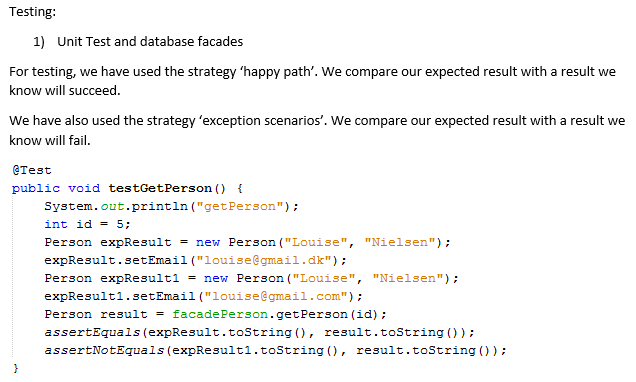

REST API

Test strategies and results

MANGLER?!?!?!?
Testing the REST API, REST ASSURED - EMIL HAR LAVET - FÅ HAM TIL AT FORKLARE
MANGLER OGSÅ!!!
A clear and precise description of how to test the system.
the documentation must include a description of how:
o we can test the API via your implemented test cases using REST Assured
o and how to use the web pages that uses the API.
Complete description og Company API and how to test with POSTMAN


Studypoints
INHERITANCE - STRATEGY
We have used inheritance so that our Company class and our Person class
can have the same relationships to the same objects. If we haven’t done it with inheritance,
then it would be necessary for example Address to have an id referring to Company
and an another id referring to Person. Now, it is only necessary to have one id
referring to both of them at the same time.